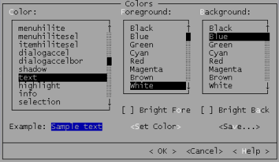
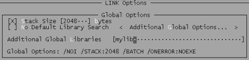
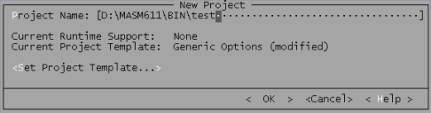
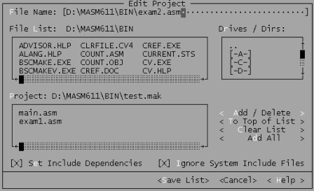

PWB(Programmer's WorkBench)是MASM 6.11提供的集成环境。在此环境下，程序员可直接编写源程序、汇编、连接和运行。
| 在汇编源程序时，如果有错误，系统将列举出所有出错位置和出错原因。还可用Shife+F3和 Shife+F4进行错误定位； |
| 在连接时，可指定堆栈的大小、附加的库文件、符号跟踪等选项； |
| 在运行时，可设置命令行参数、直接运行、按调试方式运行、用DOS命令来运行等。 |
…>pwb /? Microsoft (R) Programmer's WorkBench Version 2.1.49 Copyright (c) Microsoft Corp 1992. All rights reserved. Usage: PWB [<options>] [<files>] ……
通常情况下，在PWB后面跟一个将要编辑的源文件名。假如要编辑源文件TEST.ASM，那么，可直接输入下面命令：
…>pwb test.asm
PWB的编辑功能与许多编辑器的功能类似，有：建立新文件、保存文件、另存为、光标移动功能、块操作、插入/删除操作、恢复操作、查找/替换操作、设置编辑器的功能键和各类颜色等。
要想了解更全面的编辑功能，可查看菜单：File、Edit、Search和Options的前四个菜单项。

在画面1.1(Options菜单中的Colors…)中，可选择各类窗口、菜单和文本等对象的背景色和前景色。比如：当要改变源程序的显示颜色时，可先在左边的列表框中选择Text列表项，然后在选择其背景色和前景色文本
在集成环境下，源程序的汇编和连接是一次性完成的。当汇编任务结束，且没有错误信息时，连接程序立即开始连接工作。但如果源文件有错，则显示所有错误位置和原因，连接程序不会被执行。在浏览错误信息时，可用Shife+F3和Shife+F4进行错误定位。
在连接时，如果需要库文件，那么，可选用Options菜单中的Link Options菜单项来设置，该菜单项的显示画面如画面1.2所示。

画面1.2 连接选项的部分设置画面
在该画面上还可为程序设置一个缺省的堆栈段，其大小也可由用户自行决定。
当生成执行文件需要多个模块连接时，就需要建立一个工程文件(MAK)。建立工程文件的步骤和画面如下：
(1)、输入工程文件名，其默认的后缀为MAK。输入画面如画面1.3所示

画面1.3 建立工程文件名的画面
在画面1.3中还可选择工程目标文件的类型，该类型有：EXE、COM、LIB、Windows的EXE或DLL等二十几种。当然，对每种类型又有一些不同的要求，在此不在进一步展开叙述了。通常情况下，不必选择目标文件类型，其缺省类型就是DOS EXE。
(2)、工程文件的编辑在画面1.3中输入工程文件名，并且按OK按钮时，系统将进入画面1.4，在该画面中可向当前工程中添加源程序，也可把某源程序从当前工程中删除。

画面1.4、编辑工程文件的画面
当输入的文件名不在工程文件中，则把该源文件添加到工程文件中，否则，将其从工程文件中删除。当所有源文件都添加到工程文件中时，可按Save List来保存该工程文件。此后就可用打开工程文件的方式来连接该工程中的文件。
如果需要修改工程文件的话，则可先用Project菜单中的Open Project菜单项打开工程文件，再用Edit Project菜单项来激活画面1.4进行编辑。
在运行程序时，可设置命令行参数、直接运行、按调试方式运行、用DOS命令来运行等。通常情况下，在编写程序的初期，一般都用调试方式来运行程序。当选用这种方式时，系统会自动进入CV的调试环境。有关CV的使用参见调试工具中CodeView的介绍。